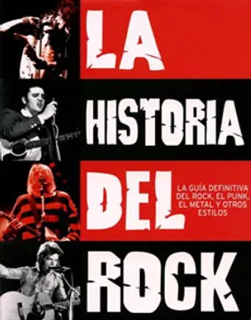
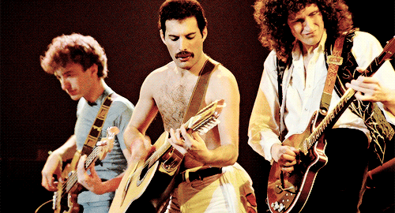
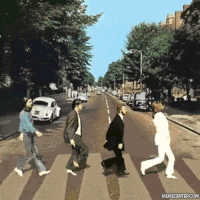

El rock es un amplio género de música popular originado a principios de la década de 1950 en Estados Unidos y que derivaría en un gran rango de diferentes estilos a mediados de los años 1960 y posteriores, particularmente en ese país y Reino Unido.12 Tiene sus raíces en el rock and roll de los años 50, estilo nacido directamente de géneros como el blues, el rhythm and blues (pertenecientes a la música afroamericana) y el country. También se nutrió fuertemente del blues eléctrico y el folk, además de incorporar influencias del jazz y la música clásica, entre otras fuentes. Instrumentalmente, el rock se ha centrado en la guitarra eléctrica, en general como parte de un grupo integrado por batería, bajo, uno o más cantantes y, algunas veces, instrumentos de teclado como el órgano y el piano. Usualmente, se basa en canciones en compás de 4/4 y una estructura verso-estribillo, sin embargo, el género se ha vuelto extremadamente diverso y las características comunes son difíciles de definir. Como la música pop, las letras se centran a menudo en el amor romántico, pero también tratan un amplio rango de otros temas con un enfoque frecuente en lo social, lo personal y lo político.
A mediados de la década de 1960, los músicos de rock comenzaron a adoptar el álbum como medio dominante de difusión, expresión y consumo de música grabada. The Beatles fueron la cara principal del desarrollo comercial del género y sus producciones llevaron a la legitimación cultural del rock en el mainstream, iniciando así la época del álbum en la industria musical que perduraría varias décadas. Ya a finales de la década de 1960, a la que se refiere como el periodo del «rock clásico»,1 habían surgido numerosos subgéneros, entre ellos, híbridos como el blues rock, folk rock, country rock, rock sureño, raga rock y el jazz rock, muchos de los cuales contribuyeron al desarrollo del rock psicodélico, influenciado por la escena contracultural psicodélica y hippie. Entre los nuevos géneros que emergieron de esta escena se incluyen el rock progresivo, que amplió los elementos artísticos, el glam rock, que resaltó el espectáculo en vivo y el estilo visual, y el heavy metal, que se centra en el volumen, el poder y la velocidad. En la segunda mitad de los años 1970, el punk intensificó y reaccionó contra algunas de estas tendencias con una música cruda y energética y letras altamente políticas. Durante la década siguiente, el punk fue una de las principales influencias en el desarrollo de otros subgéneros como el new wave, el post-punk y, finalmente, el rock alternativo.
 A partir de la década de 1990, el rock alternativo se convirtió en el estilo dominante del género y se hizo conocido en las formas de grunge, Britpop e indie rock. Desde entonces, han aparecido diversos subgéneros de fusión, incluidos el pop punk, el rock electrónico y el rap rock y rap metal, así como varios intentos de revivir la historia del rock con el resurgimiento de géneros como el garage rock/post-punk durante los años 2000. La década de 2010 marcó un declive en el impacto y la relevancia cultural del rock, cuando géneros ajenos como el hiphop lo superaron en popularidad y dominaron gran parte del mainstream musical.
La música rock también abarcó y sirvió de vehículo para movimientos culturales y sociales, lo que llevó a la creación de subculturas como los mods y los rockers en Reino Unido y la contracultura hippie en San Francisco (Estados Unidos) en la década de 1960. De forma similar, la cultura punk de la década de 1970 originó las subculturas visualmente distintivas emo y gótica. Heredera de la tradición folclórica de la canción de protesta, la música rock ha sido asociada con el activismo político, así como con los cambios en las actitudes sociales sobre el racismo, el sexo y el uso de drogas y es usualmente vista como una expresión de la rebelión juvenil contra el consumismo y conformismo.
Tradicionalmente, el rock se ha centrado en el sonido de la guitarra eléctrica amplificada, que emergió en su forma moderna durante los años 50 con la popularidad del rock and roll. También fue influenciado por el sonido de los guitarristas de blues eléctrico. La guitarra eléctrica en el rock es típicamente acompañada por un bajo eléctrico, que apareció de forma pionera en la música jazz durante la misma época, y una batería, instrumento de percusión que combina tambores y platillos. Este trío es a veces acompañado de otros instrumentos, particularmente teclados como el piano, el órgano Hammond y el sintetizador. Esta formación deriva directamente de la instrumentación básica de los grupos de blues. Sin embargo, una banda de rock suele constar de entre tres (un power trio) a cinco miembros, aunque un cuarteto es lo más común.
Los orígenes del rock se encuentran en el rock and roll, género nacido a finales de la década de 1940 y principios de la de 1950 en Estados Unidos, que rápidamente alcanzó fama mundial. Este proviene de la fusión de varios géneros de la música afroamericana de la época, como el rhythm and blues y el góspel, con otros estilos autóctonos como el country. En 1951 en Cleveland, el disc-jockey Alan Freed empezó a transmitir rhythm and blues (en ese entonces conocida como race music) para audiencias multirraciales, y se lo acredita como la primera persona en emplear el término rock and roll para describir este tipo de música.
No hay acuerdo sobre cuál de las muchas canciones denominadas la «primera grabación de rock and roll» merece realmente ese título. Entre las candidatas figuran «Good Rocking Tonight» (1948) de Wynonie Harris; «Rock Awhile» (1949) de Goree Carter;«Rock the Joint» (1949) de Jimmy Preston, versionada por Bill Haley & His Comets en 1952; y «Rocket 88» de Jackie Brenston y sus Delta Cats (quienes eran en realidad Ike Turner y su banda Kings of Rhythm), producida por Sam Phillips para Sun Records en 1951. También se ha argumentado que el sencillo debut de Elvis Presley, «That's All Right» de 1954, es «la primera grabación de rock and roll». Otros artistas del género con éxitos tempranos fueron Chuck Berry, Bo Diddley, Fats Domino, Little Richard, Jerry Lee Lewis y Gene Vincent.
En 1955 «Rock Around the Clock» de Bill Haley se convirtió en la primera canción de rock and roll en liderar las listas de la revista Billboard.1819 Pronto el rock and roll sería la principal fuente de ventas en el mercado musical estadounidense, lo que provocó que crooners como Eddie Fisher, Perry Como y Patti Page, que habían dominado la música popular en la década pasada, encontraran su acceso a las listas de éxitos considerablemente limitado. El rock and roll derivó en numerosos subgéneros, incluidos el rockabilly, en combinación con la música country «hillbilly», que sería grabado e interpretado por artistas blancos como Carl Perkins, Jerry Lee Lewis, Buddy Holly y, con enorme éxito comercial, Elvis Presley, a mediados de los años 50. Los movimientos hispanos y latinoamericanos en el rock and roll, que popularizarían el rock latino y chicano en Estados Unidos, empezaron a emerger en el Suroeste del país con músicos de rock and roll estándar como Ritchie Valens y otros con diferentes influencias culturales, como Al Hurricane y sus hermanos Tiny Morrie y Baby Gaby, que comenzaron a fusionar el rock and roll con el country-western en la música tradicional de Nuevo México. Otros estilos como el doo wop, originado en grupos vocales afroamericanos en los años 30 y 40, pondrían especial énfasis en las armonías vocales y los coros (de los cuales el género obtendría su nombre), y eran usualmente acompañados por una instrumentación ligera. Grupos como The Crows, The Penguins, The El Dorados y The Turbans consiguieron grandes éxitos y otros músicos como The Platters, con «The Great Pretender» (1955), y The Coasters, con temas humorísticos como «Yakety Yak» (1958), fueron de los más exitosos músicos de rock and roll de su época.
El rock and roll instrumental de músicos como Duane Eddy, Link Wray y The Ventures sería desarrollado por Dick Dale, quien le añadiría una distintiva reverb «mojada», una veloz técnica de alternate picking, e influencias de la música medioriental y mexicana. En 1961 Dale lanzaría —con un enorme éxito regional— «Let's Go Trippin'», comenzado así una locura por la música surf, a esta le seguiría con temas como «Misirlou» en 1962. Al igual que Dale y sus Del-Tones, la mayoría de bandas del surf temprano serían formadas en el Sur de California, incluyendo a The Bel-Airs, The Challengers, y Eddie & the Showmen. Otras instrumentales exitosas durante los inicios del género serían «Pipeline» (1962) de The Chantays, y «Wipe Out» (1963) de The Surfaris, que alcanzarían, respectivamente, el puesto 4 y 2 en la Billboard Hot 100. El surf, sin embargo, alcanzaría su mayor éxito como música vocal, concretamente con el trabajo de The Beach Boys, formada durante 1961 en el Sur de California. Sus primeros álbumes incluirían tanto instrumentales surf rock (incluyendo versiones de la música de Dick Dale) como canciones, caracterizándose por la inclusión de armonías cerradas del pop de grupos como The Four Freshmen, y elementos del rock and roll y doo wop. El sencillo debut de The Beach Boys, «Surfin'» de 1962, se convertiría en un éxito comercial, logrando entrar al top 100 de la listas de Billboard, y ayudando así a hacer de la música surf un fenómeno nacional. Debido a que la mayoría de música surf fue grabada y publicada entre 1961 y 1965, se considera que la carrera de casi todos los grupos y músicos del género terminó con la llegada de la «Invasión británica» en 1964.
Para finales de 1962, lo que se convertiría en la escena del rock británico empezaría con bandas de beat como The Beatles, Gerry and the Pacemakers y The Searchers de Liverpool, y Freddie and the Dreamers, Herman's Hermits y The Hollies de Mánchester. Estas se nutrieron de una amplia gama de influencias estadounidenses, incluyendo el rock and roll de los 1950, el soul, el rhythm and blues y la música surf,61 originalmente interpretando estándares de la música estadounidense para ser bailados. Otros grupos como The Animals de Newcastle, Them de Belfast,62 y en particular aquellos de Londres como The Rolling Stones y The Yardbirds, estaban más directamente influenciados por el rhythm and blues y blues tardío.63 Pronto estos grupos empezarían a componer su propio material, combinando las diferentes formas de música estadounidense e inyectandolas con energéticos ritmos. Las bandas de beat solían ir a por «animadas e irresistibles melodías», mientras que las del blues británico temprano iban por canciones más agresivas, menos sexualmente inocentes, a veces adoptando una postura antisistema. Había, sin embargo, una inclinación a mezclar estas dos tendencias, en especial en sus etapas iniciales.64 Para 1963, las bandas de beat, lideradas por The Beatles, empezarían a tener enorme éxito nacional en Reino Unido, seguidas poco atrás en las listas musicales por los grupos más influenciados por el rhythm and blues.65 En febrero de 1964, «I Want to Hold Your Hand» de The Beatles se convertiría en la primera canción de esta proliferación de bandas en alcanzar el puesto número uno de la Billboard Hot 100,66 permaneciendo un total de 15 semanas en la lista, con siete en la cima.6768 El 9 de febrero del mismo año, la primera aparición del grupo en The Ed Sullivan Show sería visualizada por 73 millones de televidentes, convirtiéndose en ese entonces en el episodio más visto de un programa de entretenimiento, y marcando un hito en la cultura popular estadounidense.69 Dos meses más tarde, durante la semana del 4 de abril de 1964, The Beatles lograrían posicionar 12 sencillos en el Billboard Hot 100, incluyendo el top cinco entero. El éxito de The Beatles —que eventualmente les llevaría a ser los artistas musicales con mayores ventas de la historia— ramificaría a que las listas musicales de Estados Unidos fueran invadidas de bandas británicas.64 Durante los dos años siguientes los artistas británicos dominarían la industria musical nacional y estadounidense, con músicos como The Kinks,70 The Dave Clark Five,70 Peter and Gordon, The Animals, Manfred Mann, Petula Clark, Freddie and the Dreamers, Wayne Fontana and the Mindbenders, Herman's Hermits, The Rolling Stones, The Troggs, y Donovan liderando en al menos una ocasión las listas de éxitos.67
Esta «invasión británica» ayudaría a internacionalizar el sonido del rock and roll, dando lugar así a que músicos británicos e irlandeses posteriores tuvieran enorme éxito comercial.71 En Estados Unidos esto se traduciría al fin de la música surf instrumental, los grupos vocales femeninos y, por un tiempo, los ídolos adolescente, que habían dominado las listas de éxitos del país durante finales de los 1950 e inicios de los 60.72 La carrera de importantes intérpretes de R&B, como Fats Domino y Chubby Checker, se estancó, así como el éxito en las listas musicales de los artistas restantes del rock and roll original, incluido Elvis, se encontraría temporalmente acabado.73 La invasión británica también desempeñó un papel importante en el ascenso del rock como un estilo musical distintivo y en la primacía de las bandas en el género, al establecer la formación típica de guitarras y batería y la creación de su propio material a modo cantautor.24 Siguiendo el ejemplo establecido por The Beatles con Rubber Soul en 1965, varios grupos británicos editaron álbumes de rock como «declaración artística» en 1966, entre ellos, Aftermath de The Rolling Stones, Revolver de los propios Beatles y A Quick One, de The Who. También siguieron esta tendencia algunos músicos estadounidenses, como The Beach Boys con Pet Sounds y Bob Dylan con Blonde on Blonde.74
Folk rock Artículo principal: Folk rock Fotografía en blanco y negro de Joan Báez y Bob Dylan cantando mientras este toca la guitarra Joan Báez y Bob Dylan en 1963 Hacia la década de 1960, la escena que se había desarrollado a partir del resurgimiento del folk americano se convirtió en un movimiento importante, en el que se tocaba música tradicional y composiciones nuevas en estilo tradicional, usualmente con instrumentos acústicos.7576 En Estados Unidos, el género fue innovado por músicos como Woody Guthrie y Pete Seeger, y se asoció comúnmente con el movimiento obrero y progresista.75 A principios de la década, Joan Báez y Bob Dylan encabezaban el folk como cantautores.77 Alrededor de 1963, Dylan empezó a alcanzar popularidad mainstream con éxitos como «Blowin' in the Wind» y «Masters of War», que acercaron la «canción de protesta» a un público más amplio.78 Sin embargo, y pese a que empezaban a influenciarse mutuamente, el rock y el folk se mantendrían extensamente como géneros separados, a menudo con audiencias mutuamente excluyentes.79 Entre los ejemplos tempranos de combinación de elementos del rock y folk se incluye la versión de «The House of the Rising Sun» (1964) de The Animals, considerada la primera canción de folk grabada con instrumentación de rock and roll en ser un éxito comercial,80 y «I'm a Loser» (1964) de The Beatles, primer tema del grupo directamente influenciado por Dylan.81 Sin embargo, el auge del folk rock suele atribuirse a la grabación de The Byrds de «Mr. Tambourine Man» de Dylan, que lideró las listas de éxitos musicales en 1965.79 The Byrds, cuyos miembros habían sido parte de la escena folk de Los Ángeles, adoptaron una instrumentación de rock que incluía batería y guitarras Rickenbacker de doce cuerdas, que luego fueron un elemento esencial en el sonido del género.79 Ese mismo año, Dylan también comenzó a usar instrumentos eléctricos —muy para el disgusto de muchos puristas del folk— y su sencillo «Like a Rolling Stone» se convirtió en un éxito en Estados Unidos.79 Según el crítico y periodista musical Richie Unterberger, Dylan (incluso antes de adoptar instrumentos eléctricos) influenció a músicos de rock como The Beatles y demostró «a la generación roquera en general que un álbum podía ser una importante declaración independiente sin sencillos exitosos», tal como The Freewheelin' Bob Dylan de 1963.82
Blue Cheer, Black Sabbath, Led Zeppelin, Deep Purple, Queen, Sir Lord Baltimore y Iron Claw empiezan a combinar elementos de otros géneros musicales y sientan las raíces de lo que sería el heavy metal, que alcanzó su máxima popularidad en la década de los ochenta. Con los discos Black Sabbath y Paranoid de Black Sabbath y Led Zeppelin de Led Zeppelin se da por sentada la creación del heavy metal. Gracias a la gira de The Rolling Stones American Tour 1972 se populariza la frase "Sexo, drogas y rock and roll". Paul Rodgers salta a la fama con Free, principalmente a través del tema "All right now", a finales de los años 1960 y principios de los años 1970, para luego formar Bad Company. Faces, con Rod Stewart a la cabeza, son otro exponente de ese rock de crudeza clásica, a caballo entre el blues rock y el hard rock.
Queen salta a la fama con una mezcla de hard rock, rock progresivo, heavy metal, glam rock y ópera rock. Primeros años 1970. Además se considera que el sencillo Stone Cold Crazy fue la primera canción de Thrash metal. The Stooges, New York Dolls y MC5, y más tarde The Runaways, comienzo del proto-punk. Elvis Presley realiza el primer concierto televisado vía satélite a nivel mundial conocido como Aloha from Hawaii. En 1974 nace el punk rock con uno de los pioneros del género, Ramones. Esta música está caracterizada por ser más simple, con canciones de entre uno y dos minutos de duración y sin solos de guitarra complicados. Otra característica son las letras reivindicativas sobre problemas políticos y sociales. Un poco más adelante se unirían al nuevo género reivindicativo, por parte británica, bandas como Sex Pistols o The Clash. Nace Kiss con su característico maquillaje esta vez apegados al heavy metal y al rock and roll. Jethro Tull, Pink Floyd, Genesis etapa Peter Gabriel, Yes, Rush y King Crimson: el rock progresivo y el jazz rock. Pink Floyd publica The Dark Side of the Moon, que se convertiría en el disco más exitoso del género, postulándose asimismo como padres del space rock, que tendría en Hawkwind su continuidad. Emerge el glam rock con artistas como Elton John, T. Rex, Queen, David Bowie, Roxy Music, Alice Cooper, Slade y Sweet, a los que se sumaron Lou Reed y The Stooges. El glam actualizó, con provocación y maquillaje, la frescura del rock and roll de los años 1950 frente al virtuosismo del rock progresivo, e influyó posteriormente en el punk y en todos los géneros que nacieron a partir de él a finales de la década. Mountain y Grand Funk Railroad crean un nuevo estilo y son pioneros del hard rock y el heavy metal norteamericano. Aerosmith salta a la fama, con una mezcla de hard rock con ritmos funkys. Paralelamente surgen grupos como Kiss, Cheap Trick y Ted Nugent. En Australia nace AC/DC y en Irlanda Thin Lizzy, mientras en Inglaterra emergen Motörhead, quienes impondrían una mayor velocidad en los riffs, adelantándose al crossover punk-metal y al thrash. Segunda etapa y desarrollo final del heavy metal. Rainbow, UFO, Judas Priest, Scorpions, Nazareth, Uriah Heep como algunas de las bandas dentro del movimiento. El power pop recupera las melodías de los grupos de la Invasión británica, combinándolas con guitarras enérgicas con artistas como Big Star, Todd Rundgren o The Raspberries. A finales de la década el género vive su éxito comercial gracias a grupos como The Knack. A partir de los años 1990 grupos de rock alternativo como Teenage Fanclub y The Posies revitalizarían el género. Kraut-rock, derivación alemana del rock sinfónico o progresivo, en la se comienza a usar el sintetizador, derivado del Moog, de una cierta manera que provocaría el nacimiento de la música electrónica. Can, Neu!, Kraftwerk. La gran explosión inglesa del punk, tras la aparición de The Ramones, Misfits, Patti Smith, Iggy Pop y The Dictators, seguidos por Dead Boys y The Heartbreakers en los Estados Unidos y como reacción a los excesos, vuelta a lo básico; surgen en el Reino Unido Sex Pistols, The Clash, The Damned, Buzzcocks, The Slits. Desde Jamaica el reggae alcanza popularidad en todo el mundo gracias a Bob Marley y otros artistas como Peter Tosh y Jimmy Cliff. Otro ritmo jamaiquino, el dub, se populariza de la mano de Lee «Scratch» Perry. El reggae marcaría profundamente a muchos músicos de rock, como The Rolling Stones, y especialmente a la generación punk y new wave, entre ellos The Clash y The Police. A partir de esa fusión de punk y reggae evolucionaría el ska moderno o 2 Tone. El new wave, tributario del rock and roll de los años 1950, tras el fin del punk. The Police, Blondie, Talking Heads, Devo, The B-52's, Elvis Costello. Van Halen revoluciona a partir de su primer disco en 1978 la forma de tocar la guitarra eléctrica en el hard rock. Surgimiento del post-punk: Siouxsie and The Banshees, The Cure, Joy Division, Bauhaus, Public Image Ltd., Gang of Four, Parálisis Permanente. Uso del sintetizador en el synth pop a finales de la década: Kraftwerk, Gary Numan, Ultravox, Human League. Rock gótico en Europa, deathrock en los Estados Unidos y dark wave en Alemania, Holanda y otros países de Europa influenciados por el post-punk, el Glam rock y el New wave. Bauhaus, The Sisters of Mercy, The Cure, Siouxsie and the Banshees, Joy Division, The Damned, Clan Of Xymox, Dead Can Dance, Christian Death, Alien Sex Fiend, Specimen. Raíces del rock industrial: electrónica y rock comienzan a fusionarse. Throbbing Gristle, KMFDM, Einstürzende Neubauten. Tom Waits y más tarde Nick Cave representarían la figura del crooner desde un punto de vista iconoclasta y underground, en una dilatada carrera que se extiende desde los años 1970 hasta la actualidad, y cuyo mayor apogeo tiene lugar en los años 1980. El soft rock es representado por grupos como America e Eagles. La NWOBHM surge en Inglaterra con bandas como Iron Maiden, Diamond Head, Saxon, Angel Witch, Tygers of Pan Tang y Def Leppard como estandarte. Tuvo también su mayor esplendor el rock sureño, género surgido a finales de la década de 1960, que mezclaba rock and roll, blues y country. Sus máximos exponentes fueron bandas como The Allman Brothers Band, Lynyrd Skynyrd, ZZ Top, y algunos temas de Creedence Clearwater Revival y posteriormente bandas como Outlaws y Black Oak Arkansas. Años 1980